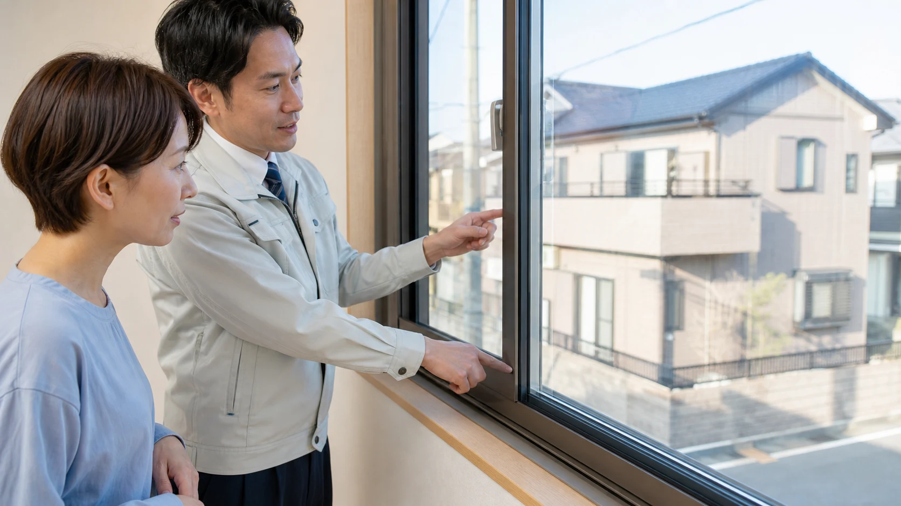
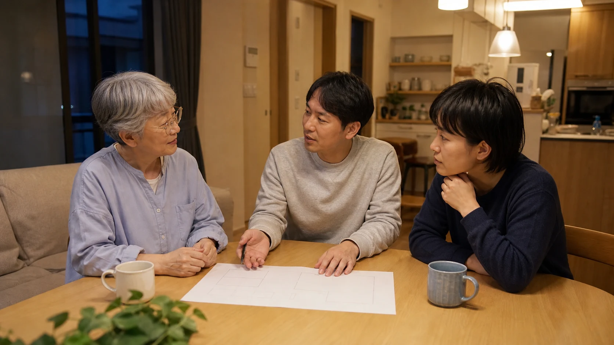

道路の走行音や設備音、家族の生活音を負担に感じることがあります。この記事では、音の発生源と伝わる経路を確かめ、減らしたい音と残したい家族の気配を分けて考える視点から、住まいの音環境の整え方を紹介します。
1. 負担に感じる音を整理する
道路の走行音、隣家の生活音、家庭内の家電の稼働音、家族の話し声やテレビの音。私たちは日常的に、意識しないレベルの音に囲まれて暮らしています。一つひとつは小さくても、それが重なり続けることで、気づかないうちに負担に感じることがあります。
環境省の「騒音に係る環境基準」には地域や時間帯ごとの屋外基準があり、幹線交通を担う道路に近接する空間などでは、窓を主として閉めた生活を想定した屋内基準の特例も設けられています。適用条件があるため、室内の一般的な快適性の目安として一律に使うことはできません。自宅の音環境を考える際は、数値だけで判断せず、音の発生源・時間帯・伝わる経路を確認することが出発点になります。
2. 家の音はどこから入るか・伝わるか
家の中に届く音には、大きく分けて次のような種類があります。
- 外部から入る音：道路の交通音、近隣の生活音、工事音など。
- 家の中で発生し伝わる音：足音や物を落とす音などの固体伝播音、テレビや会話などの空気伝播音。
- 設備から発生する音：エアコン、換気扇、給湯器などの稼働音。
これらの音がどこから、どのように伝わるかを知ることは、対策を考えるうえでの出発点になります。建築音響の分野では、音の伝わり方や遮音の仕組みについて体系的に整理されており、専門書としては木村翔さんの『建築音響と騒音防止計画』（彰国社、2012年）などが基礎的な知見をまとめています。
ベターリビングのつくば建築試験研究センターには音響試験棟があり、壁・サッシ・ドア・換気口などの音響透過損失を測定する試験が行われています。音の悩みを考えるときは、製品名だけでなく、どの部位でどの性能を確かめるのかを見る視点も役立ちます。
3. 減らしたい音、残したい気配
音対策というと「とにかく静かにする」ことを目指しがちですが、それが必ずしも心地よい家につながるとは限りません。たとえば、家族がキッチンで料理をする音や、別室にいる子どもの気配は、暮らしのつながりを感じる手がかりになる場合があります。
大切なのは、次の2つを分けて考えることです。
- 減らしたい音：道路の走行音、隣家からの生活音、深夜の設備音など、負担に感じる音。
- 残したい気配：家族の話し声や物音など、つながりを感じさせる音。
この視点を持つことで、「全部を遮音する」のではなく、「どこを遮り、どこを残すか」というメリハリのある対策を考えられるようになります。
4. 窓から整える音環境
外部騒音が出入りする経路の一つが窓です。壁と比べて遮音上の弱点になる場合があります。窓の遮音性能を示す指標として、JIS A 4706:2021「サッシ」で定められた遮音性の等級（T-1〜T-4）があり、数字が大きいほど遮音性能が高いとされています。
窓からの音を軽減する方法としては、次のようなものが挙げられます。
- 内窓（二重窓）を設置する：既存の窓の内側にもう一枚窓を加えることで、空気層による遮音効果が期待できます。
- 遮音性能の高いガラスに交換する：合わせガラスなど、遮音性能を高めたガラスを使う方法もあります。
- 窓まわりの隙間を減らす：経年劣化した気密材（パッキン）を交換するだけでも効果が見込める場合があります。
これらの効果の程度は、建物の構造や周辺環境によって異なるため、リフォームを検討する際は専門家による現地確認をおすすめします。

5. 窓だけでは解決できない音もある
窓の対策だけで、すべての音の悩みが解決するわけではありません。まずは、外から入ってくる音なのか、家の中で響く音なのか、それとも床・壁・天井を伝わる音なのかを分けて考えることが大切です。音の通り道が違えば、取るべき対策も変わります。
今日からできること
子どもの足音が気になるときは、遊ぶ場所に衝撃を和らげるクッションマットやラグを敷く、室内履きを見直す、といった方法があります。椅子を引く音には脚にフェルトやキャップを付ける、テレビやスピーカーは隣戸に面した壁から離して置く、という工夫もできます。話し声やテレビの音は、夜遅い時間の音量や使う部屋を家族で決めるだけでも、毎日の負担を減らせることがあります。
リフォームで考えること
足音が主な悩みなら、床の下に衝撃を和らげる材を入れる、遮音性能を確認した床材へ替える、といった方法があります。壁越しの話し声やテレビ音が気になる場合は、音が抜けている場所を確認したうえで、壁の中に吸音材・遮音材を追加する、二重の壁や天井を検討する方法もあります。ただし、音は別の壁や床を回り込んで伝わることもあるため、工事の前に施工会社へ「どの音が、どこから、いつ聞こえるか」を具体的に伝え、現地で見てもらうことが欠かせません。
マンションでは、自宅に入ってくる音だけでなく、自宅の足音・椅子を引く音・テレビや楽器の音が上下階や隣戸へ伝わる可能性も考えます。床材の変更や防振対策を行う前に、管理規約・使用細則で遮音性能や工事申請の条件を確認し、管理組合と施工会社へ施工内容を相談してください。戸建てで有効な対策を、そのままマンションへ当てはめないことが大切です。
「音の悩み＝窓のリフォームで解決」と単純化せず、まずは一つできる工夫を試し、改善しないときは音の通り道に合った工事を選ぶ。この順番で考えると、対策の優先順位を決めやすくなります。
6. 心地よい音の距離感をつくる
家族それぞれの生活時間帯が異なる今、「同じ音を、同じように心地よいと感じるとは限らない」という前提を持つことも重要です。在宅で仕事をする人にとっての「気になる音」と、リビングでくつろぐ人にとっての「安心する音」は違うかもしれません。
家族で「どんな音が気になるか」「どんな気配は残したいか」を話し合うことが、住まいの音環境を整える最初の一歩になります。そのうえで、窓の改修など具体的な対策を検討する際は、複数の専門家に現地を見てもらい、優先順位を一緒に考えることをおすすめします。
